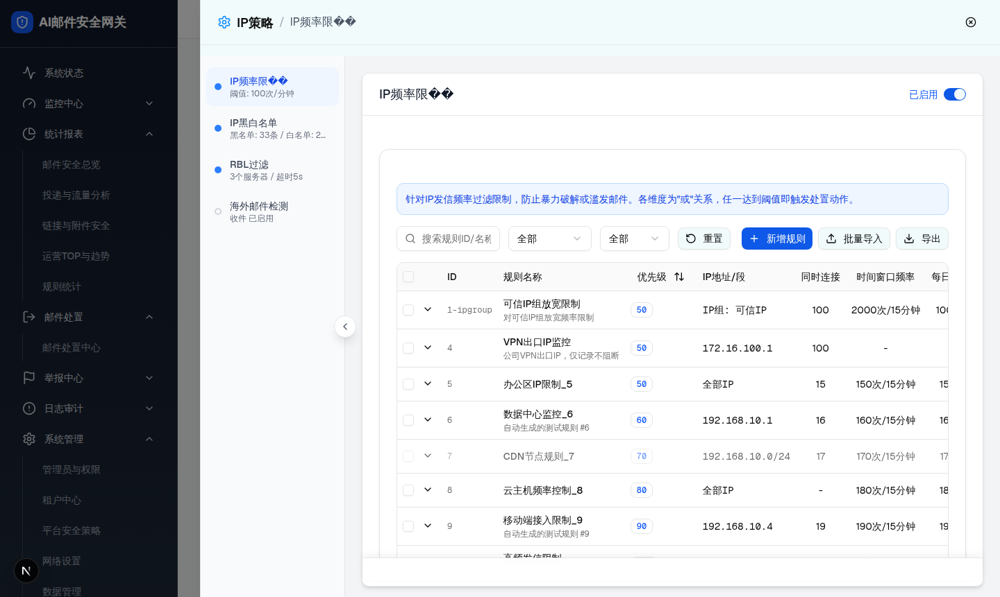

| 所属组件 | 2.2 IP频率限制规则列表模块 |
| 触发路径 | 层级0 规则列表默认态 -> 点击“高频发信限制”所在行左侧 ChevronDown 展开按钮 |
| 浏览器状态 | 展开行追加在原规则行下方，背景为 muted/30，包含 4 个详情分组。 |

| 元素 | 实际文案/值 | 交互 |
|---|---|---|
| IP级防护分组 | 每日限制 5000、并发上限 50、时间窗口 1000次/15分钟、认证失败/小时 20。 | 只读。 |
| 单连接防护分组 | 命令错误上限 “-”、认证失败上限 3。 | 只读。 |
| 处置动作分组 | 当次阻断“拒绝连接”、IP挂起“30分钟”。 | 只读。 |
| 统计信息分组 | 当前挂起IP 5、历史挂起次数 128、查看挂起IP列表。 | 点击链接进入层级2。 |
| 比对项 | demo 实际 DOM | 提取 HTML | 是否一致 |
|---|---|---|---|
| 根节点 | tr.bg-muted/30.hover:bg-muted/30 | 嵌入同一 outerHTML | ✅ 一致 |
| 子节点数 | 1 个 td[colspan=13] | 1 个 td[colspan=13] | ✅ 一致 |
| 节点数量 | 46 | 46 | ✅ 一致 |
| 关键文本 | IP级防护、单连接防护、处置动作、统计信息、查看挂起IP列表 | 全部包含 | 一致 |